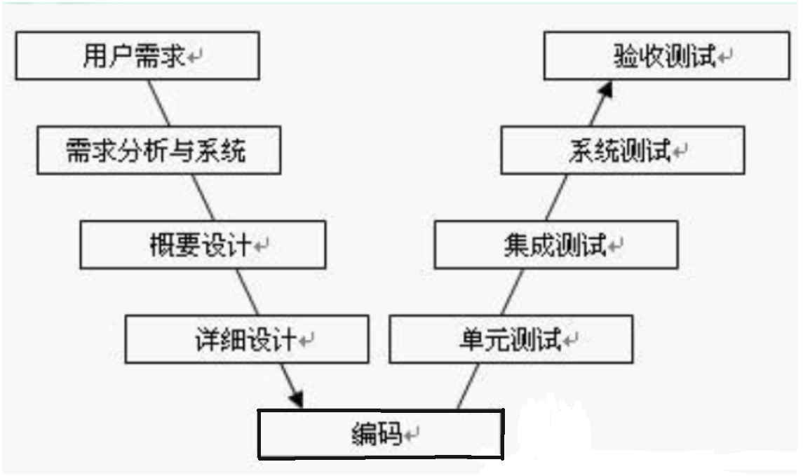
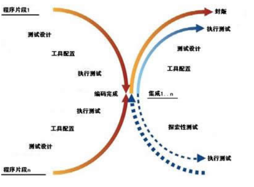
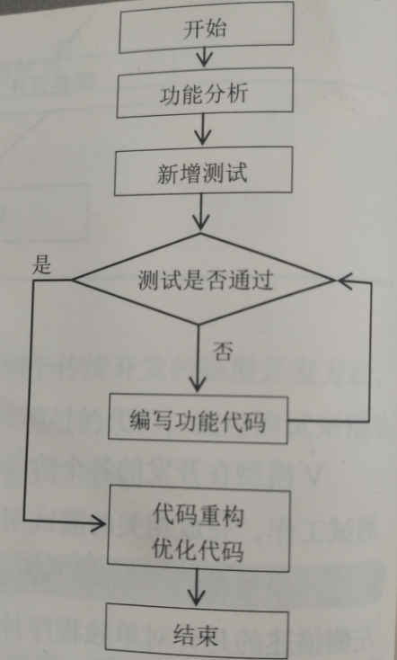

# 导读
本章主要介绍敏捷开发模式。敏捷开发是 20 世纪 90 年代兴起的一种新型软件开发方法，能快速应对需求的变化。他需要分析人员与程序开发人员紧密协作，采用面对面的有效沟通方式频繁交付新的软件版本。测试驱动是敏捷开发的重要组成部分，python 是敏捷开发项目常采用的一种语言。本章重点介绍测试驱动开发的特点、步骤和环境建立，以及 Python 单元测试，doctest 和 Epydoc 的使用。
# 正文
# 测试驱动开发
测试驱动开发 (Test-Driven-Development)，简称 TDD，是一种有别于传统开发的新型开发方法。它要求在编写某个功能的代码之前先编写测试代码，让后编写是测试通过的代码，通过测试来推动整个开发的进行。这有助于编写简洁可用和高质量的代码，以便加速开发进程。
# 测试驱动开发模式 (TDD)
当下科技高速发展，软件规模越来越大，软件开发人员也越来越多，因此软件开发过程必须要有知道开发的软件模式。一些小项目也许可以采用边做边改的开发模式，项目一旦做大，这样的开发模式就不能满足需求了。
瀑布模型作为传统的开发模式，曾一度受到追捧，它将软件生命周期划外为制定计划，需求分析、软件设计、程序开发、软件测试和运行维护六个阶段，这六个阶段的各项活动严格按照线性方式进行，每一个阶段的工作成果都需要进行验证，验证通过才能进入下一阶段，否则返回修改。
传统的开发模型除了瀑布模型外，还有造代模型、快速原型模型、增量模型、螺旋模型，但这些模型都有自身的缺点，如何适应瞬息万变的需求变化，如何高效地实施软件开发，是每个软件行业人员必须思考的问题。
敏捷开发在这样的环境下应运而生，它是一种以人为核心、迭代、循序渐进的开发方法，开发过程中，软件项目的构建被切分成多个子项目，各个子项目既相对独立又相互联系，可以分别完成，开发过程中软件一直处于可使用状态。
测试驱动开发模式 TDD 是敏捷开发的重要组成部分，也是一种设计方法论，其基本思想就是在开发某个功能代码前，先编写测试代码，然后编写功能代码并用测试代码进行验证，如此循环直到完成全部功能的开发。
测试模型中的 V 模型和 X 模型都是 TDD 的最好体现方式，V 模型如图所示：

V 模型在开发的各个阶段，包括需求分析、概要设计、详细设计、编码过程中都考虑相对应的测试工作，完成相关的测试用例设计和测试脚本编写。
X 模型是对详细阶段和编码阶段进行建模，针对某个功能进行对应的测试驱动开发。X 模型的左侧描述的是针对单独程序片段所进行的相互分离的编码和测试，此后进行频繁的集成，通过集成最终成为可执行的程序，然后再对这些可执行程序进行测试. X 模型还定位了探索性测试，这是不进行事先计划的特殊类型的测试，这一方式往往能帮助有经验的测试人员在测试计划之外发现更多的软件错误。
X 模型如图所示

TDD 的优点：节省了调试程序及挑错的时间，在任意一个开发节点都可以拿出一个可以使用含少量 bug 并具有一定功能和能够发布的产品。
TDD 的缺点：增加代码量，测试代码是系统代码的两倍或更多倍。
# TDD 使用步骤
TDD 在满足软件开发目标的同时，也要实现代码的简单整洁。
在明确软件需求后，对一个新功能的开发过程包括以下步骤，如图 4-3 所示。
步骤 01: 明确当前代码要完成的功能。可以记录成一个列表，必要时需写相关接口。
步骤 02: 快速新增对要完成功能的测试。
步骤 03 : 运行测试，判断测试代码是否通过，通过则执行步骤 06, 不通过则执行步骤 04。
步骤 04: 编写对应的功能代码。
步骤 05 : 重新运行测试，保证全部通过。
步骤 06: 对代码进行重构，优化代码结构。
步骤 07: 循环完成所有功能的开发。

# Tips
要完成一个系统，代码的功能点可能很多，需求也可能随时变化，任何阶段想添加功能，都应吧相关的功能点加到测试列表中，避免疏漏。
# unittest 测试框架
# Reference
https://www.cnblogs.com/youlixishi/articles/3551992.html
《python 网络编程从入门到精通》